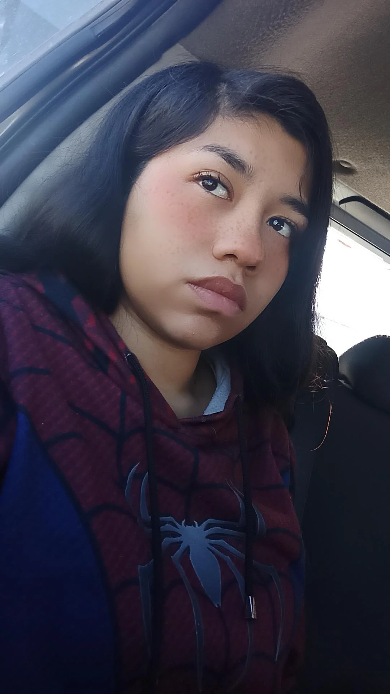

Objetivos
Programar páginas web
Aprender más sobre edición de videos
Tomar fotos sin necesidad de editar
Poder mejorar mis técnicas de dibujo
Educación
Kinder: Colegio María Álvarez de Rodríguez
Primaria: Colegio María Álvarez de Rodríguez
Secundaria: Colegio María Álvarez de Rodríguez
Preparatoria: Universidad de Estudios Avanzados
Universidad: Universidad Vizcaya de las Américas
Experiencia laboral
Niñera
Creadora de contenido
Practicante en una imprenta
Habilidades
Cantó
Facilidad de crear torneos (videojuegos)
Repostería
Educación
Concurso de cantó en primaria
Concurso de cantó en secundaria

Pasatiempos
Mis paginas Favoritas
Número telefónico: 844 585 8310
Correo: melissasanchez.vizcaya@gmail.com